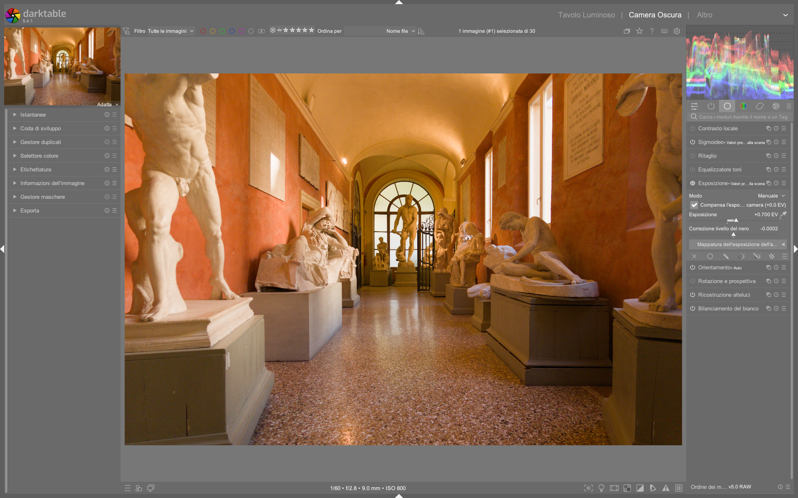

Exposure¶
Il modulo Exposure controlla la luminosità globale dell’immagine nel dominio lineare, operando prima dell’applicazione del profilo colore di input — quindi in uno spazio scene-referred, camera RGB e non compresso1. Questa posizione nella pipeline è fondamentale: permette di regolare l’esposizione senza introdurre artefatti cromatici o distorsioni di gamma6. A differenza di Lightroom, dove l’«esposizione» agisce su un segnale già elaborato (con white balance applicato e curve tonali predefinite), in darktable il modulo exposure opera sul segnale grezzo proveniente dal sensore, rendendolo il punto di partenza obbligato per ogni correzione tonale corretta2.
Perché non usare 'Basic Adjustments'?
Il modulo deprecato basic adjustments (rimosso da darktable 3.6) combinava esposizione, ricostruzione luci e bilanciamento colore in un’unica operazione fuori posto nella pipeline. Questo causava conflitti con moduli successivi come filmic rgb o tone curve. Usare exposure separatamente garantisce che la regolazione avvenga prima del profilo colore, rispettando il flusso scene-referred7.
Parametri¶
| Parametro | Range | Default | Descrizione |
|---|---|---|---|
| Mode | Manual / Automatic | Manual | In modalità Automatic, darktable analizza l’istogramma RAW per impostare l’esposizione in modo che un dato percentile (es. 50%) raggiunga un target level specificato in EV rispetto al punto bianco della fotocamera1. Disponibile solo su immagini RAW. |
| Exposure | -18.0 ... +18.0 EV | 0.0 EV | Compensazione espositiva globale. Il valore massimo esteso a ±18 EV (accessibile con click destro sullo slider) consente correzioni estreme per immagini molto sottoesposte o sovraesposte1. Valori tipici per correzioni standard: da -1.5 a +2.0 EV. |
| Black level correction | -0.1 ... +0.1 | 0.0 | Regolazione fine del punto nero. Un valore positivo solleva leggermente i neri, riducendo il clipping negativo; un valore negativo li abbassa. Attenzione: non usare per aggiungere densità ai neri, perché può generare valori RGB negativi fuori gamut1. Per questo, preferire filmic rgb (scheda scene) o base curve. |
| Compensate camera exposure | On / Off | Off | Rimuove automaticamente la compensazione espositiva registrata nei metadati EXIF (es. se la fotocamera era impostata su +0.7 EV). Utile per uniformare serie di immagini scattate con diverse impostazioni di esposizione manuale1. |
| Clipping threshold | 0.001% ... 10.0% | 0.010% | Soglia di rilevamento del clipping per i canali RGB. Determina quali pixel vengono considerati «clippati» durante le operazioni automatiche (es. auto-exposure). Valori più bassi sono più sensibili al clipping1. |
Area exposure mapping (nuovo in darktable 4.0+)¶
Introdotta in darktable 4.0, questa funzionalità avanzata permette di misurare e replicare l’esposizione di una regione specifica tra immagini diverse8. È particolarmente utile per: - Deflickering di time-lapse - Batch editing di serie fotografiche con illuminazione variabile (es. nuvole che passano) - Allineamento espositivo di immagini bracketed prima della fusione HDR
| Parametro | Range | Descrizione |
|---|---|---|
| Area mode | Measure / Correction | In Measure, si seleziona un’area (es. grigio medio, carta da parati, logo) e si registra la sua luminosità L* (CIE Lab). In Correction, si applica la stessa misura a un’altra immagine per calcolare automaticamente l’esposizione necessaria1. |
| Lightness (L*) | 0.0 ... 100.0 % | Valore di luminosità CIE Lab misurato nell’area selezionata. Il valore predefinito è 50.0% (grigio medio)1. |
| Target lightness | 0.0 ... 100.0 % | Luminosità obiettivo per l’area. Darktable calcola l’esposizione richiesta per far sì che l’area raggiunga questo valore1. |
Nota tecnica: L’area mapping richiede che il modulo
exposuresia posizionato prima diinput color profilenella pipeline, poiché la conversione da RGB camera a Lab dipende dal profilo colore. Su JPEG/PNG, spostareexposuredopoinput color profileo usare il preset v3.0 for JPEG/non-RAW input1.
Uso nel flusso scene-referred¶
L’obiettivo primario non è «centrare l’istogramma», ma posizionare il grigio medio della scena (18.45% reflectance) a un livello di luminosità coerente con la percezione umana1. Questo valore corrisponde approssimativamente a L* = 50.0 nel colore CIE Lab, ed è il riferimento standard per la misurazione espositiva.
- Attivare la valutazione colore (Cmd+B) per visualizzare il bordo bianco di riferimento e verificare la linearità dei toni medi2.
- Selezionare un’area neutra ben illuminata (es. parete chiara, superficie opaca) e usare lo strumento di misurazione (
color pickeraccanto allo sliderexposure) per ottenere una lettura L*. - Regolare
exposurefinché il valore L* letto nell’area target si avvicina a 50.0%, ignorando ombre profonde e alte luci (gestite successivamente dafilmic rgb,tone curveohighlight reconstruction)1. - Verificare che nessun canale RGB sia clippato: abilitare
clipping indicators(Ctrl+O) e controllare che non compaiano aree rosse (rosso = clipping canale R), verdi (G) o blu (B).
Evitare il black level correction per i neri
Non usare black level correction per aumentare la densità dei neri: genera valori RGB negativi che possono causare artefatti cromatici in moduli successivi (es. color calibration, filmic rgb). Per aggiungere densità ai neri, usare invece:
- Il parametro relative black exposure nella scheda scene di filmic rgb 1
- Una curva tonale con toe accentuato in base curve o tone curve 1
Uso come contenitore maschera¶
Un pattern avanzato e documentato nei workflow professionali: duplicare il modulo exposure e usarne la prima istanza esclusivamente per definire una maschera, senza applicare alcuna modifica all’esposizione45. Questa maschera può poi essere riutilizzata come raster mask in tutti i moduli a valle (es. color balance rgb, tone equalizer, sharpen).
Procedura passo-passo¶
- Aggiungere un modulo
exposure(istanza #1) e disattivare la modifica: impostareexposure = 0.0,black level correction = 0.0. - Creare una maschera geometrica (cerchio, ellisse, gradiente) o disegnata (path) sull’area di interesse.
- Nel pannello mask manager, rinominare la maschera (es.
sky_mask,subject_mask) per identificarla facilmente9. - Aggiungere un secondo modulo
exposure(istanza #2) o qualsiasi altro modulo (es.color balance rgb). - Nella sezione mask del modulo #2, cliccare su raster mask → select from history → scegliere la maschera creata nell’istanza #1.
Questo approccio è più efficiente che ricreare la stessa maschera in ogni modulo, soprattutto quando si lavora con immagini ad alta risoluzione o su hardware limitato. La maschera viene memorizzata una volta sola nella pipeline e riutilizzata come texture raster6.
Consigli operativi avanzati¶
1. Esposizione per la fusione HDR/EXR¶
Quando si preparano immagini per la fusione (HDR, enfuse, PhotoFlow), l’esposizione deve essere ottimizzata per massimizzare la copertura dinamica senza clipping:
- Per l’immagine più chiara: impostare exposure in modo che i canali più brillanti (es. cielo, luci artificiali) siano appena sotto il clipping (L* ≈ 98–99%). Usare clipping indicators per verificare.
- Per l’immagine più scura: impostare exposure in modo che i dettagli nelle ombre più profonde siano visibili (L* ≥ 2–3%), evitando rumore eccessivo12.
2. Maschere parametriche con esposizione¶
Le maschere parametriche (basate su luminosità, colore, frequenza) possono essere combinate con exposure per effetti locali precisi:
- Selezione basata sulla luminosità: creare una maschera parametrica con luminance tra 0.3 e 0.7 (30–70% di luminosità) per applicare un aumento di esposizione solo ai toni medi.
- Selezione basata sulla frequenza: usare frequency > 0.5 per isolare i dettagli fini (es. piume, peli) e applicare un leggero chiarimento locale senza alterare i toni generali10.
3. Scorciatoie da tastiera¶
- E + rotella mouse: regolazione rapida di
exposure3 - Shift+E: attiva/disattiva il modulo
exposure - ++ctrl+click++ sullo slider
exposure: inserimento manuale del valore (fino a ±18 EV)1 - ++alt+click++ sullo slider
black level correction: reset al valore predefinito (0.0)
4. Workflow per paesaggi con ampio DR¶
Per immagini con cielo sovraesposto e primo piano sottoesposto:
1. Usare exposure per bilanciare il primo piano (es. +0.8 EV), accettando il clipping del cielo.
2. Applicare highlight reconstruction con metodo guided laplacians per recuperare il cielo8.
3. Usare una maschera graduale (gradiente verticale) su un secondo modulo exposure per ridurre l’esposizione solo nella parte superiore dell’immagine (-0.6 EV).
4. Affinare con filmic rgb: impostare white relative exposure a +2.4 EV e black relative exposure a -6.2 EV per espandere il range tonale finale11.
5. Esempio pratico: correzione automatica per time-lapse¶
Da What is new in darktable 4.0? (timestamp 8:22)
Per deflickering di una sequenza di 120 immagini con variazioni di luce dovute a nuvole:
1. Aprire la prima immagine e attivare area exposure mapping → mode = Measure.
2. Con il color picker, selezionare un’area neutra stabile (es. muro in ombra, L* = 32.4%).
3. Passare alla seconda immagine: mode passa automaticamente a Correction.
4. Selezionare la stessa area: darktable calcola exposure = -0.17 EV.
5. Ripetere per tutte le immagini della sequenza usando il tasto Ctrl+C per copiare la misura e Ctrl+V per incollarla8.
6. Esempio pratico: esposizione per stampa su carta opaca¶
Da darktable first steps ep01 (timestamp 12:45)
Per preparare un ritratto destinato alla stampa su carta FSC-certificata con riflettanza 85%:
1. Attivare color assessment (Ctrl+B) per avere il contesto neutro.
2. Misurare con il color picker la luminosità di una zona neutra (es. collo): L* = 48.2%.
3. Regolare exposure fino a portare L* a 52.0%, leggermente più alto del grigio medio per compensare la minore brillantezza della carta.
4. Verificare che il bianco del colletto rimanga sotto L* = 95% per evitare perdita di dettaglio in stampa2.
Domande frequenti¶
Problema: L’area mapping non funziona su JPEG importati¶
Il modulo exposure in modalità area mapping richiede un segnale lineare RAW per convertire correttamente da RGB camera a CIE Lab. Su JPEG, il segnale è già compresso con una gamma non lineare (es. sRGB gamma 2.2), rendendo impossibile la misura affidabile di L*. Soluzione: spostare exposure dopo input color profile nella pipeline o usare il preset v3.0 for JPEG/non-RAW input1.
Problema: Dopo aver applicato exposure, il modulo color calibration mostra artefatti cromatici¶
Questo accade quando black level correction genera valori RGB negativi, che interferiscono con gli algoritmi di adattamento cromatico CAT16. La soluzione è evitare black level correction e usare invece filmic rgb → scene tab → black relative exposure per gestire i neri, oppure base curve con un toe pronunciato1.
Problema: Il cursore exposure non risponde a valori oltre ±1.0 EV¶
Il limite visivo dello slider è ±1.0 EV per default, ma il modulo supporta valori fino a ±18.0 EV. Per inserire valori estremi, fare ++ctrl+click++ sullo slider e digitare manualmente il valore (es. -3.42)1.
Problema: L’auto-esposizione imposta un valore troppo alto su immagini con grandi zone scure¶
L’algoritmo automatico usa il percentile definito (default 50%) e può essere influenzato da ombre profonde. Soluzione: impostare percentile = 65% e target level = 0.0 EV per privilegiare i toni medi-alti, oppure usare area exposure mapping su una zona neutra ben illuminata1.
Preset integrati¶
| Preset | Quando usarlo | Note |
|---|---|---|
| Auto-exposure (50%) | Editing batch rapido di immagini con illuminazione costante | Usa il 50° percentile come riferimento per il grigio medio. Non adatto a immagini high-key o low-key1. |
| Expose to the right (ETTR) | Preparazione per filmic rgb o AgX con massima qualità tonale |
Imposta exposure in modo che il picco dell’istogramma RAW tocchi il bordo destro senza superarlo13. |
| Deflicker base | Time-lapse con variazioni di luce moderate | Configurato con area mode = Measure, target lightness = 50.0%, clipping threshold = 0.005%8. |
Riferimenti visuali¶

{kind=link}
Risorse¶
- darktable User Manual — Exposure
- PIXLS.US — Simple Exposure Mapping in GIMP
- PIXLS.US — Aligning Images with Hugin
- A Dabble in Photography — darktable masking Episode 3
- A Dabble in Photography — What is new in darktable 4.0?
Fonti¶
-
darktable User Manual -- Exposure, docs.darktable.org |
processed/darktable-usermanual-en/usermanual-48-en-module-reference-processing-modules-exposure.md↩↩↩↩↩↩↩↩↩↩↩↩↩↩↩↩↩↩↩↩ -
darktable first steps ep01 — A Dabble in Photography ↩↩↩
-
Lowlight photos — A Dabble in Photography ↩
-
Landscape edit with AI — A Dabble in Photography ↩
-
Night Sky Full Edit — A Dabble in Photography ↩
-
darktable 5.4 UPDATE — A Dabble in Photography ↩↩
-
darktable user manual — (deprecated) basic adjustments, docs.darktable.org ↩
-
What is new in darktable 4.0? — A Dabble in Photography ↩↩↩↩
-
darktable masking Episode 3 — A Dabble in Photography ↩
-
darktable masking episode 2 — A Dabble in Photography ↩
-
A guide to AgX in darktable — A Dabble in Photography ↩
-
PIXLS.US — HDR Photography with Free Software, pixls.us/articles/hdr-photography-with-free-software-luminancehdr/ ↩
-
darktable user manual — process, docs.darktable.org |
processed/darktable-usermanual-en/usermanual-48-en-overview-workflow-process.md↩